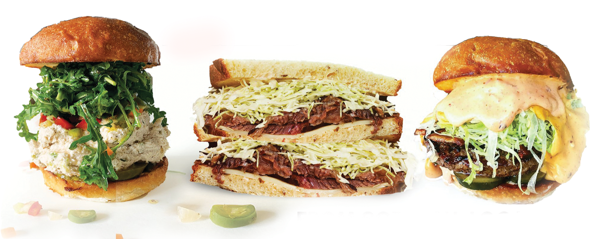

ABOUT US
All our pastrami is brined and made in-house. We use regional produce when available and local bakeries for all our bread. Our goal is to provide the best quality sandwiches and to be known as the best pastrami in the nation. Pastrami Zombie is our food truck spin off of our Sammich Chicago Italian eatery, located in Ashland, Oregon.